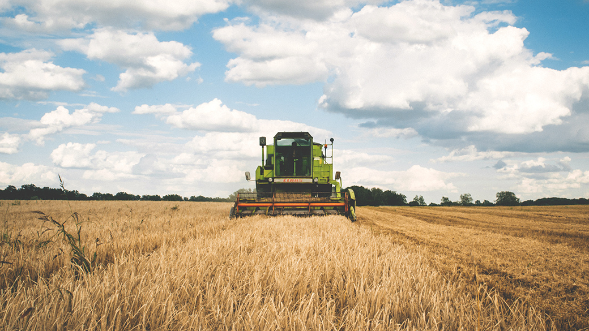

Nikos Manouselis: 'In 10 years I want all food information to be interconnected'
With the ODI Summit less than a week away, we catch up with summit speaker and CEO of Agroknow, Nikos Manouselis, on what excites him about the future of open data and agriculture
 Image: By Pexels (CC0 BY 1.0)
Hi Nikos. How is Agroknow having an impact on society?
We’re currently helping scientists, information officers, students, decision-makers and practitioners to be better informed by collecting new information from hundreds of institutions and publishers around the world. We do this by contributing to a search engine run by the Food and Agriculture Organisation of the United Nations (FAO).
What do you think the world will look like in 10 years' time, with advances in how agriculture data is being accessed, used and shared?
Well, 10 years ago information in agriculture and food was generated and managed within closed software systems – libraries, supply chains, decision support tools. It was in silos, disconnected and impossible to discover, combine and reuse. In 10 years I really hope that such information can be discoverable, machine-readable and interconnected.
I hope we will be able to ask for a piece (or view) of specific information through our tech devices, and some software process will automatically connect different systems together, negotiate the terms of use, carry out the required financial transaction, and deliver the requested information right to where you need it.
What do you think most needs to change in order to achieve this?
We need interoperability across different data sources and platforms. We need to make sure that different systems can talk to each other, exchange information that is stored in different formats, and clarify the different semantics. It is a technology barrier, but also a cultural one. We need to develop and map the various standards, but also decide that systems can talk to each other.
How do we engage people from outside the open data community to play a role in creating this impact?
We need to explain the value and potential of openness in various environments and settings. To explain that for data there is a spectrum of openness degrees, rather than "open vs closed". To clarify that being open does not mean giving your data away, but rather making it discoverable and usable. To convince a variety of traditional stakeholders to see public-sector data as a common good or as fuel for good (and fair) commercial services. And, crucially, we need to demonstrate to the private sector the benefits and opportunities from becoming open data leaders.
What excites you most about the future of how data s used in agriculture?
I am really excited about all the discussions around openness. What does open data mean in the agriculture and food industry? How can The Data Spectrum be applied in the large variety and heterogeneity of agriculture and food data?
How can open data leadership become a competitive advantage for private businesses? What could the value of open business models be? Will the abundance of open research data accelerate new scientific discoveries? I'm looking forward to finding out.
What innovations in data have particularly inspired you?
My inspiration has been the cultural shift that seems to be transforming the sector. I am amazed by several things: the perception of data produced with public money as a common good; the disruptive business models that have data sharing and transparency at their core; the emergence of discussions around trust, responsibility, ownership and governance. These are the innovations that really inspire me and change the way that I see things.
Do you think we’re technologically equipped for the rapid growth of data?
My research and development team insists that we do not have yet the computing and storage facilities to do really great things with the growing sources and streams of data in our sector. They also point out that in dark, dirty, muddy and noisy environments like the ones our users typically operate in, we will be needing appropriate technological equipment for data collection, handling and visualisation that we have not yet seen in the market. I think that they are right.
What advice would you give to others who are innovating with data?
We need to look at how data can be put in use to serve people in addressing the specific problems, not the other way around. We need to offer solutions using data, rather than hacking data for the sake of it.
You’re speaking at the ODI Summit 2016. What will you be talking about?
I will describe the vision that we have for a global, common data ecosystem for agriculture and food to propel the industry forward. I'll also describe what we plan to do to catalyse its creation, in the context of the Global Open Data for Agriculture and Nutrition (GODAN) initiative.
Agroknow finds, connects and delivers agriculture and food information worldwide. They help organisations, networks and companies to put data together to solve a particular problem or tell a story.
Join us at the ODI Summit on 1 November to hear inspiring stories from around the world on how people are innovating with the web of data, with presentations from diverse innovators – from startups to high-profile speakers such as Sir Tim Berners-Lee (creator of the World Wide Web), Sir Nigel Shadbolt (AI expert) and Martha Lane Fox (Lastminute.com founder).